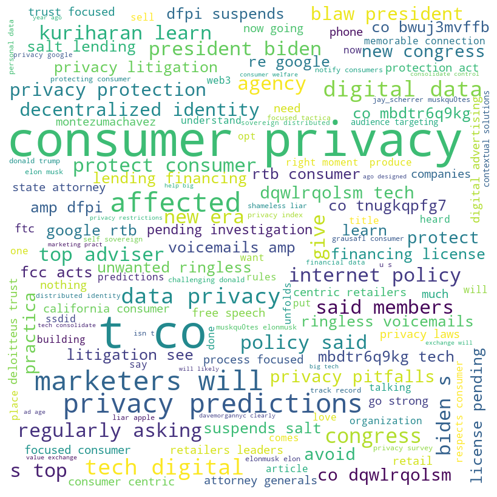
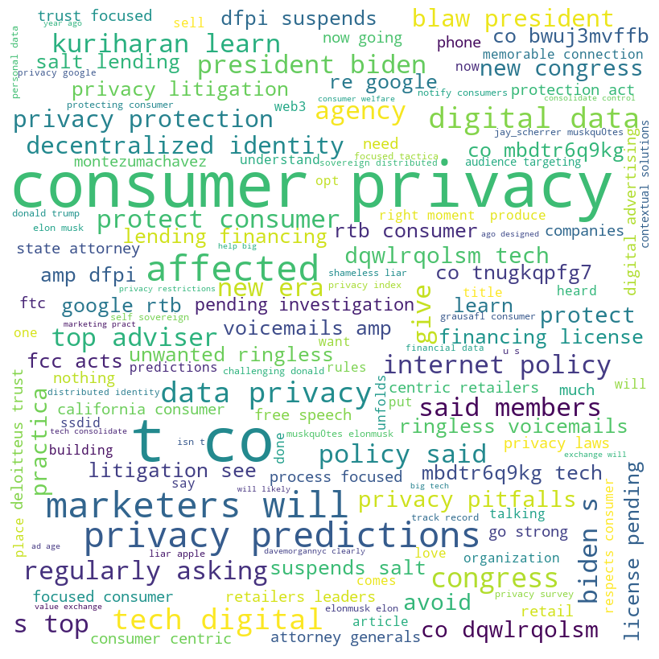

Code
from IPython import display
display.Image("../images/consumer_privacy-1.png")
With the popularity of video-clip, there is an increasing number of people to choose WE media to start their own careers. The considerable income and low requirement which WE media brings attract people’s attention. It gives people a nearly fair chance to get success in this field if they have some specific characteristics and have the ability to attract audiences.
Here is my 10 questions about my project. For conclusion tab, I would like to check if I have answered all of these:
What does WE media bring to us?
What advantages does WE media have?
What disadvantages does WE media have?
Should ad sales focus move further online?
What is the employment prospect of WE media?
What factors does online influencer has to be success?
How to use WE media to earn money?
What does data anlytics play in WE media? How important?
Companies V.S. Individual
Should people choose WE media to develop their careers due to the popularity trend?
The self-media era is an era in which everyone can speak out, everyone is a reporter, and everyone can become a media source. In such an era, people’s life and world are quietly changing.
Since entering the Internet age, people’s living fields have changed accordingly, from the face-to-face real world to the virtual world constructed by the Internet. The virtual world created by self-media is different from the previous electronic cyberspace, and its virtual field and real field have a high degree of integration. For example, the “circle of friends”, which copies the relationship between people in reality to the mobile network, realizes the connection between the virtual world and the real world. The two complement each other and penetrate each other. Stacked imprints of duality.
In the era of self-media, the daily life of individuals is becoming a “news release” [1]. For a long time, the daily life of ordinary people who are silent in the private space has stepped out of the private sphere and put on the label of sharing. WeChat users can post pictures and texts through the “Moments”, share their own life dynamics, and also share articles, videos, music, etc., building a new sharing space.
In the self-media era, the sources of information are more accessible, and people have entered the field of public life to a greater extent. In the “circle of friends”, people share and disseminate various public topics and the latest policies and policies, reflecting their close attention to public life.
Make money. The goal of many people doing self-media is to make money. We-media platforms have a lot of traffic, and when the time is right, they will use the traffic to convert it into income.
If you are famous, if you are a self-media, as long as you develop well, you can also have fans. Of course, attention is valuable. In the eyes of fans, you have influence on them, and they will see your every move, so you must establish a good image in front of fans, and be a person with a sense of justice and love.
To be able to improve yourself, to be a self-media, you must continue to share content and provide value to fans. If you don’t have any knowledge and experience yourself, you can’t bring them anything. So I need to keep learning, practicing, and improving myself.
Harvest contacts. Now contacts are more important. Everyone knows the importance of communication. Many ideas are obtained through communication. You need to communicate more with people, share and give appropriately, in order to gain contacts.
As we can see in the Exploring data tab. Based on the plots generated from frequencies of twitter datasets. We can see most consumers remain positive attitudes through the consumer privacy in the big data society. Most consumers focus on how to protect their consumer privacies and take more notice on government policies of protection og privacy. However, there still 32% consumers remain negative attiudes about consumer privacy. Through the wordcloud, there are still some nagative words and phrases like “privacy pitfall”, “stop”, “affect”, “unwarranted”. Government should takes action to process consumers’ review.
More than this, social media companies should not only focus on benefits earned from big data society, they need to take action to protect consumers’ privacy. Nowadays, there are a lot of cases about “credit card fraud”, “internet fraud”. People can easily generate the privacy from others like phone number, address, or even credit card number. We need to ensure within the rapid progress of development of big data society, consumer privacies need to be carefully protected in order to prevent huge loss.
from IPython import display
display.Image("../images/consumer_privacy-1.png")
With the convenience of network platforms, the emergence and rise of self-media has given more opportunities and channels for people to speak. People’s desires to express themselves, show themselves, meet others, and spy on others are constantly stimulated and satisfied. Gradually, public and private The boundaries of the world have become blurred, and people are more and more willing to pry into the privacy of others with peace of mind. Although compared with Weibo, which is extremely open, WeChat Moments and other functions based on the community of acquaintances have a certain degree of privacy, but WeChat allows strangers to view ten photos. No. or WeChat ID, some of your private information can be stolen. In this seemingly private social platform, users are more likely to take it lightly and voluntarily hand over their personal information. For example, when we participate in some games on the WeChat platform, we are always asked to agree to authorize or fill in personal information. After this information is obtained by background manipulators, it may become the beginning of our privacy leakage.
The openness, anonymity and immediacy of the network environment greatly increase the harm of privacy leakage consequences while lowering the threshold of network infringement. For the infringed, due to the particularity of Internet infringement, the corresponding rights protection process is increasingly difficult.
Once the information is leaked, it can reach all parts of the world at low cost and high speed, and stay on the Internet for a long time. rights are difficult to achieve.
Different from infringement cases under normal circumstances, after the occurrence of infringement cases in the network environment, it can be said that there are many difficulties from the determination of the infringer to the collection of evidence and sentencing. The massive nature of self-media makes it possible for network users and network service providers to use related technologies to infringe on the privacy of others. Since this infringement involves complex technical issues, it is difficult for us to clearly define who constituted the initial infringement behavior, who should bear the main responsibility for infringement, and it is even more difficult to judge whether an individual or organization is exempt from liability for infringement.
Due to the openness of the Internet, the occurrence of an infringement is likely to cross national borders unconsciously by the infringer, involving multiple regions and countries. However, different countries adopt different standards when defining privacy infringement, so the behavior constitutes privacy infringement in one country, but not in another country. At present, when there is no international uniform standard for privacy infringement, it is obviously more difficult for different countries and regions to deal with the same privacy infringement without conflict. Therefore, it can be seen that there is another difficulty in safeguarding the rights and interests of infringing objects in the Internet environment.
For advertisement dataset, I used clustering to find out whether the more time spent on internet will have the tendency to click on ad or not.
As we can see in the plot, the internet users who in group one(High Daily Spent on Site & Low Daily Internet Usage) are more likely to decide not to click on the advertisements. On the contrary, the internet users who in group zero(Low Daily Spent on Site & Low Daily Internet Usage) are more likely to decide to click on the advertisements. The agglomerative clustering indicates similar conclusions as K-mean clustering. We can combine these two kinds of results together to gather the final conclusion.
display.Image("../images/adimage-1.png")
display.Image("../images/adimage2.png")It is worth pondering that the influence of self-media has never been based on objectivity, impartiality, and neutrality. The appeal of self-media is based on its distinctive personal style, which also includes the way of thinking and observation of the person in charge. Consumers pay for content, to a greater extent, they are paying for the views and emotions of self-media.
Although the current self-media has derived a variety of commercial models, its overall profit model is still relatively simple. Mature commercial operations only appear in a very small number of self-media giants. For the vast majority of self-media people, advertising is still the main or even the only way to make money. The mechanism of platform sharing is more like a vision on self-media platforms, and it is difficult to achieve large-scale development. Although commercial capital is continuously injected into We Media, very few We Media receive commercial investment, and this kind of commercial financing accelerates the “Matthew Effect” of We Media, and the development of We Media presents a trend of polarization. Commercialization within the scope is difficult to achieve.
In the current we-media industry, judging from the development trend of ordinary we-media practitioners in the general public, it will become more and more difficult in the future, and it is already in a bottleneck period. The reason is that various fields have been occupied by top Vs, and they have successfully established a solid cognitive barrier in the minds of fans, which cannot be shaken. And there are still many celebrities who join the ranks of self-media and take away part of the traffic, so ordinary self-media operators have no way out. Therefore, it is not very objective to enter the personal self-media operation industry at this time.
For self-media such as small and medium-sized enterprises, it is now just in the rising period of development, that is, it is on the cusp. Because its specialization, scale, and credibility are superior to those of the general public’s self-media, the best prospects for future development are such professional small and medium-sized self-media.
We used several models to test and predict factors of online influencer in instagram.
For decision Tree tab, we can conclude that followers are the most important features to determine the influence scores. X60_day_eng_rate is the second important feature to determine the influence scores. Posts in built-in feature importance is high but in permutation is low. But from the decision tree and random forest from all over this page, the infleunce scores are highly determined by followers. The numbder of followers is one of the most important factors to determine the influence score.
display.Image("../images/decisiontree.png")
Interaction plays the most important role to define influencer score. Nowadays, Engagement rate is the most direct way to calculate the popularity of the certain instagram influencers.
In this project, I used Naive Bayes, Decision Tree, SVM, Clustering and ARM to process the dataset and gather the results. As we can see in the following models, all of these models are all important and easier to use to analyze WEmedia dataset and gain information from them.
Naive Bayes may be too simple for the complex dataset we collcted.
Decision Tree is a decision analysis method for evaluating project risk and judging its feasibility by forming a decision tree to obtain the probability that the expected value of the net present value is greater than or equal to zero on the basis of knowing the probability of occurrence of various situations. A graphical method for intuitive use of probability analysis. Because this kind of decision-making branch is drawn in a graph that resembles the branches of a tree, it is called a decision tree.For the optimal model, I got the acccuracy score which is approximately 77%. We can conclude that it is a good model to predict the record data. More than this, Within the max_depth is assigned to 2, we can conclude that the most important for feature is X[1] which is the number of followers, then the decision tree went through to calculate the features X[0] and X[4] which are the number of posts and the number of total likes. Within the feature selection, we can conclude that these three features are highly correlated to determine the influence scores. I would like to find more on random forest model in the following.
SVM Classifiers offer good accuracy and perform faster prediction compared to Naïve Bayes algorithm. They also use less memory because they use a subset of training points in the decision phase. SVM works well with a clear margin of separation and with high dimensional space. However, SVM is not suitable for large datasets because of its high training time and it also takes more time in training compared to Naïve Bayes. It works poorly with overlapping classes and is also sensitive to the type of kernel used.
Clustering is a very useful tool for data analytics. For our project, it can seperate unsupervied dataset into different groups in order to help us know the relationship between each group and difference results generated in different groups. In the real life, this typ of clustering implement is called customer segmentation. For example, we can generate customers’ different behaviors and divide them into different groups in order to match the targeted marketing compaigns. For out project topic, product sellers can first generate customer behaviors and then target suitable internet influencers to help them to do the advertisments promotion in order to earn more benefits.
More than this, From this analysis, we can clearly see that the development of social media platforms and wemedia influencers cannot live alone without data analytics and machine learnings. Clustering and Classification are all very useful tool for them to locate the target audiences and help them to earn more benefits.
In data mining and machine learning, Association Rules is a relatively commonly used unsupervised learning algorithm. Different from the classification and clustering algorithms we have learned before, the main purpose of this type of algorithm is to ——Explore the correlation between the inherent structural features (ie variables) of the data.
For question 7, 9 and 10, I still need to gather more dataset to find the results of these questions. Throughout this dataset, I learned a lot about WE media, and how to use it properly. We also need to protect ourselves privacy based on complex internet environment. Advertisements and earning money still be tricky for individual internet users. I will continue to figure out this project.